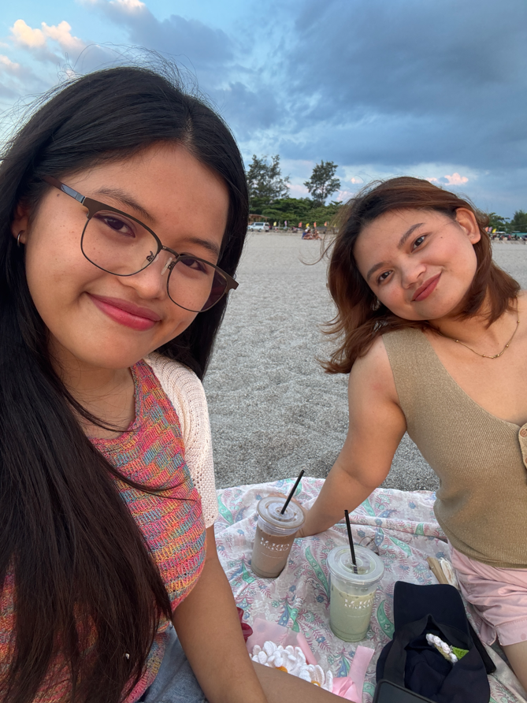
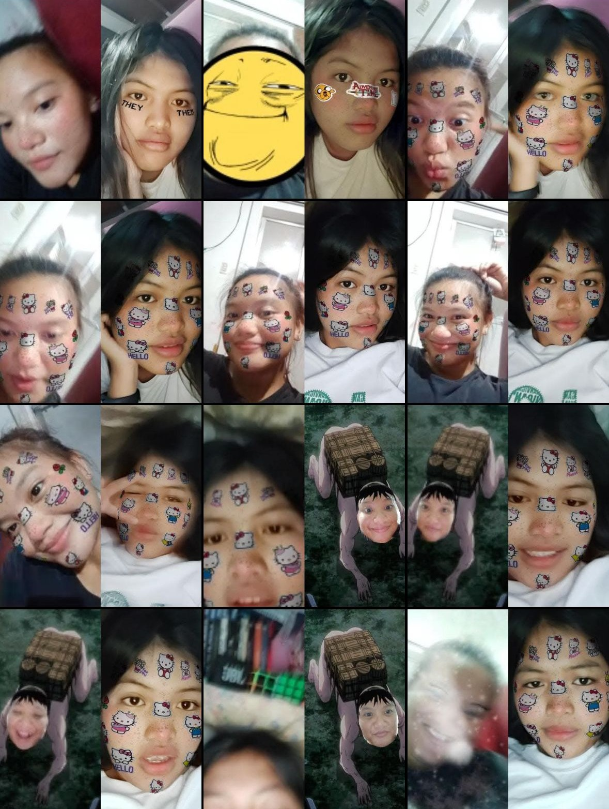
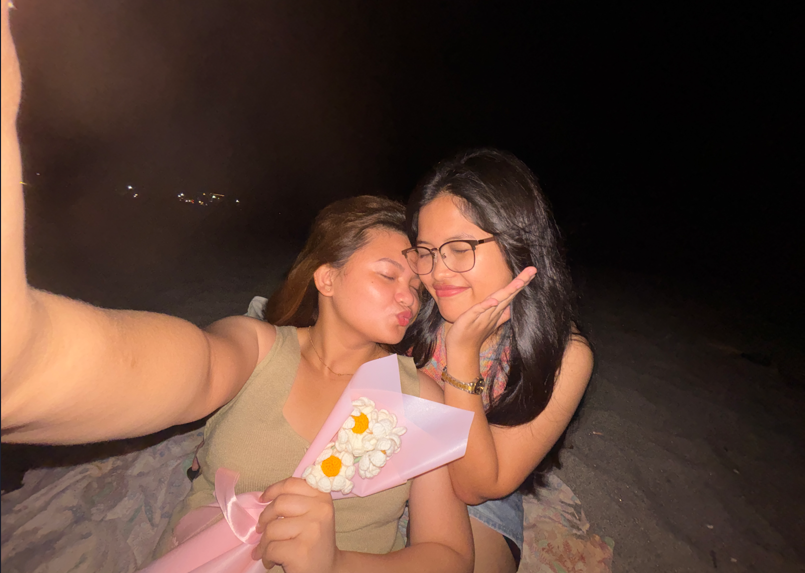

Dear Trisha,
Happy 8th Anniversaryyy, bff!! I miss you so much ˙◠˙
IDK what to give to uu, since hindi tayo magkikita. Sooo, I made this website for youuu.
Also, a letter na hindi na mawawala at masusunog hehe.
First of all, I wanted to start this letter by thanking you!
Thank you for staying by my side, and for always listening to all my rants hehe(ෆ˙ᵕ˙ෆ)♡
And also for always reaching out. Alam ko kung gano ka kabusy since nung nagstart ka na magwork but u still make time na magreach out sa akin huhu
I appreciate you, so muchhh ⸜(｡˃ ᵕ ˂ )⸝♡
And I want you to know na I’m sooo proud of you. so much proud!
you're one of the strongest, hardworking, selfless, and bravest person that I know.
I saw your struggles, and your efforts - that made me admire you so much
so, if u need someone to tell your worries, your burden, or anything
andito lang ako makikinig, through ups and down. Andito ako palagi
but if hindi mo kayang magsabi sa akin, always remember na let go of the things that feels heavy for you
It's okay to take a rest, and not worry about things. Don't be sorry din for the things na hindi mo kasalanan.
Always do the things that will make you happy and free!
Lagi lang ako andito para suportahan ka hehe
Whatever decision and step u make I’m always here cheering for you!
and I'll be the person that will clap the loudest for you!
I LOVE YOU SO MUCH MY PERSON ♡
You might be wondering kung bakit dorothea yung song hehe
well.., I know this song is abt losing a contact with a long time friend which is hindi naman tayo but yung line na
"And if you're ever tired of being known for who you know"
"you know you'll always know me"
tells me na kahit sobrang layo na natin, andito pa rin tayo para sa isa't isa
and If ever na we need someone we know we can always go back to each other.
At kahit saan man tayo makarating, I will always keep on thinking about you
kinukwento ko rin u sa other friends ko hehe
still can't believe na aabot tayo nang ganito katagal 0⩊0
If gusto mo tumawa at balikan ang highschool days natin, I'm only one call away! tho hindi ko nasagot yung last time hehe
but still, I'm here lang for youu, always.
kahit ilang friends pa ang dumating sa akin, ikaw pa rin ang number one ko (nHAKS)
but I can tell na, ikaw ang bestfriend ng inner child ko (˶ᵔ ᵕ ᵔ˶)
AAAAA I MISS YOU SO MUUUUUCH mwa mwaaaa
I LOVE YOU SO MUCH ASHIRT, MY BFF, MY PERSON, MY LOVE ❤️
ps. i love calling u bff hehe
- your bff, mean 𓍯𓂃𓏧♡


